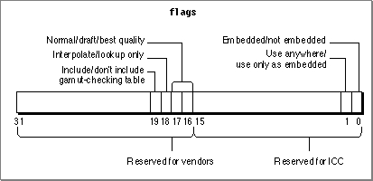

Flag Mask Definitions for Version 2.x Profiles
Theflagsfield of the CM2Header structure (page 3-43) is an unsigned long value whose bits specify information about a profile. The ICC reserves the use of bits 0 to 15 and has assigned values to bits 0 and 1. Bits 16 to 31 are reserved for use by color management system (CMS) vendors. ColorSync has assigned values to bits 16 through 19. Figure 2-1 shows the bit assignments of theflagsfield specified by ColorSync and by the ICC.Figure 2-1 The flags field of the CM2Header structure

The following enumeration defines masks your application can use to set or test various bits in the flags field of the CM2Header structure:
enum { /* these bits of the flags field are defined and reserved by the ICC */ cmICCReservedFlagsMask= 0x0000FFFF, /* if bit 0 is 0 then not embedded profile, if 1 then embedded profile */ cmEmbeddedMask = 0x00000001, /* if bit 1 is 0 then ok to use anywhere, if 1 then use as embedded profile only */ cmEmbeddedUseMask = 0x00000002, /* these bits of the flags field are defined and reserved for CMS vendors */ cmCMSReservedFlagsMask= 0xFFFF0000, /* if bits 16-17 == 0 then normal, if 1 then draft, if 2 then best */ cmQualityMask = 0x00030000, /* if bit 18 is 0 then interpolation, if 1 then lookup-only */ cmInterpolationMask= 0x00040000, /* if bit 19 is 0 then create gamut-checking info, if 1 then no gamut-checking info */ cmGamutCheckingMask= 0x00080000 };Enumerator descriptions
- cmICCReservedFlagsMask
- This mask provides access to bits 0 through 15 of the
flagsfield; these bits are defined and reserved by the ICC. For more information, see the International Color Consortium Profile Format Specification and the next two mask definitions.- To obtain a copy of the ICC specification, or to get other information about the ICC, visit the ICC's Web site at
http://www.color.org/- cmEmbeddedMask
- This mask provides access to bit 0 of the
flagsfield; this bit specifies whether the profile is embedded. It has the value 1 if the profile is embedded, 0 if it is not.- cmEmbeddedUseMask
- This mask provides access to bit 1 of the
flagsfield; this bit specifies whether the profile can be used independently or only as an embedded profile. It has the value 0 if the profile can be used anywhere, 1 if it must be embedded.- You should interpret the setting of this bit as an indication of copyright protection. If the profile developer set this bit to 1, you should use this profile as an embedded profile only and not copy the profile for your own purposes. The profile developer also specifies explicit copyright intention using the
'cprt'profile tag.- cmCMSReservedFlagsMask
- This mask provides access to bits 16 through 31 of the
flagsfield; these bits are available for a color management system (CMS) vendor, such as ColorSync. The default ColorSync Color Management Module (CMM) uses bits 16 through 19 to provide hints for color matching, as described in the following three mask definitions. Other vendors should follow the same conventions.- cmQualityMask
- This mask provides access to bits 16 and 17 of the
flagsfield; these bits specify the preferred quality and speed preferences for color matching. In general, the higher the quality the slower the speed. For example, best quality is slowest, but produces the highest quality result.- Bits 16 and 17 have the value 0 for normal quality, 1 for draft quality, and 2 for best quality. "Quality Flag Values for Version 2.x Profiles" (page 3-33) describes the constants ColorSync defines to test or set these bits.
- This feature is provided by the ColorSync Manager; it is not defined by the ICC profile specification.
- cmInterpolationMask
- This mask provides access to bit 18 of the
flagsfield; this bit specifies whether to use interpolation in color matching. The value 0 specifies interpolation. The value 1 specifies table lookup without interpolation. Specifying lookup-only improves speed but can reduce accuracy. You might use lookup-only for a monitor profile, for example, when high resolution is not crucial.- This feature is provided by the ColorSync Manager; it is not defined by the ICC profile specification.
- cmGamutCheckingMask
- This mask provides access to bit 19 of the
flagsfield. When you use a profile to create a color world, bit 19 specifies whether the color world should include information for gamut checking. It has the value 0 if the color world should include a gamut-checking table, 1 if gamut-checking information is not required. ColorSync can create a color world without a gamut table more quickly and in less space.- Many applications do not perform gamut checking, so they should set this bit to 1. However, if you call a color checking function such as
CWCheckColors(page 3-126),CWCheckBitMap(page 3-123), orCWCheckPixMap(page 3-116) after setting a profile's gamut-checking bit so that the color world does not contain gamut information, these routines return the cmCantGamutCheckError error.- This feature is provided by the ColorSync Manager; it is not defined by the ICC profile specification.